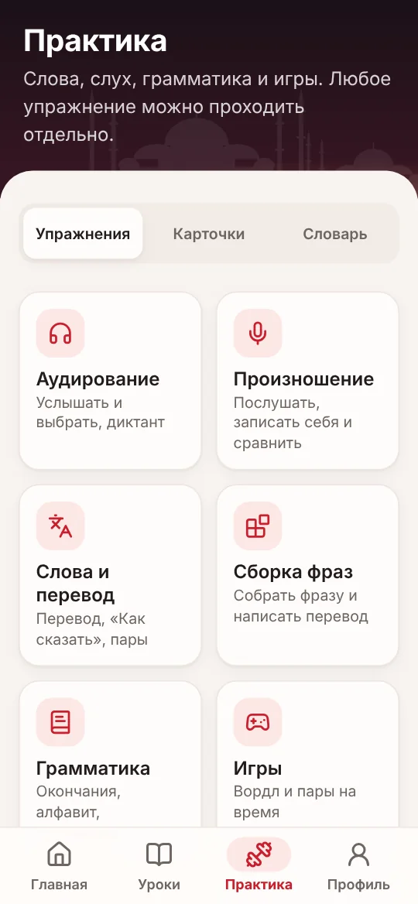

Турецкий с нуля до B2 по 10 минут в день
Короткие уроки с понятными конспектами, истории с живой озвучкой и карточки для повторения — в спокойном темпе, без гонки. Работает в браузере на телефоне и компьютере.
Идёт бета-тест: все курсы сейчас открыты бесплатно. Будем рады вашим отзывам!
Всё, чтобы заговорить, а не просто «пройти уровень»
Мы взяли лучшее из популярных приложений и исправили то, на что жалуются их ученики: нет лимитов на уроки, грамматика объяснена по-русски, озвучка живая.
Пять уровней от алфавита до B2
125 уроков с конспектами. Каждый уровень заканчивается экзаменом, а тест уровня засчитает то, что вы уже знаете.
Живая озвучка
Каждое слово, фраза и история озвучены — на выбор три голоса, два женских и мужской, а в историях роли читают разные голоса. Нажмите на любое слово, чтобы его услышать. Речь можно замедлить.
55 историй-диалогов
Такси, аптека, аренда квартиры, банк, собеседование: жизненные сцены с вопросами. Можно слушать без текста.
Говорите вслух
Приложение слушает и подсвечивает каждое слово: что получилось, а что стоит повторить.
Карточки, словарь, спряжение
1100+ слов с интервальным повторением. Нажмите на турецкое слово — появится перевод. Любой глагол — во всех временах.
Работает без интернета
Откройте приложение один раз — уроки и загруженная озвучка будут работать и без сети, например в самолёте.
Как это выглядит
Главная подсказывает следующий шаг, уроки идут по порядку, а практика собрана по темам.



Пять уровней
Следующий уровень открывается после экзамена предыдущего. Уже знаете основы — пройдите тест уровня.
Как проходят занятия
Урок занимает 10–15 минут — хоть в очереди, хоть за утренним чаем.
Читаете короткий конспект
Правило объяснено простыми словами на русском, с примерами и озвучкой.
Закрепляете в заданиях
Перевод, аудирование, сборка фраз, пропуски в предложениях и игры. Ошибки повторяются в конце урока, пока не запомнятся.
Повторяете карточками
Слова возвращаются именно тогда, когда вы начинаете их забывать.
Чем мы отличаемся
Мы собрали жалобы учеников на популярные приложения и сделали иначе.
- Без «энергии» и жизнейЗанимайтесь сколько хотите: никаких лимитов на уроки и ожидания, пока что-то восстановится.
- Грамматика по-русскиКонспект к каждому уроку, а при ошибке — кнопка «Почему так?» с правилом и подсветкой разницы в ответе.
- Сертификат за каждый уровеньСдали экзамен — получите именной сертификат в PDF: распечатать или отправить друзьям.
- Работа над ошибкамиСлова, в которых вы ошибались, собираются в отдельную тренировку.
- Разговорник на каждый деньГотовые фразы для поездки, переезда и сериалов. Любую фразу можно показать собеседнику крупно.
- Спокойный темпБез соревнований и сгорающих серий: пропустили день — ничего не потеряно.
- Удобно в любом возрастеКрупный шрифт, тёмная тема и медленная озвучка включаются в настройках.
Кому подойдёт
Едете в Турцию
Поздороваться, заказать, спросить дорогу и цену — уже после курса «Старт».
Живёте в Турции
Врач, документы, разговоры с соседями: уровни A2–B2 для настоящей жизни.
Любите турецкие сериалы
Начните понимать героев без субтитров.
Тренируете память
Крупные кнопки, спокойный темп и медленная озвучка.
Учитесь всей семьёй
У каждого — свой профиль и прогресс в своём браузере.
Уже немного знаете язык
Тест уровня засчитает то, что вы знаете, — начнёте с нужной темы.
Программа курса
Все 125 уроков по уровням. Грамматика, жизненные ситуации и истории идут вместе.
A0 Старт — с нуля · 30 уроков · 10 историй
- Алфавит и особые буквы
- Много: -lar / -ler
- Приветствия
- Вежливые слова
- Это, то: bu, şu, o
- Числа
- Повторение недели 1
- Я, ты, он
- Рассказ о себе
- Вопросительные слова
- Вопрос mı и «не»
- Прилагательные
- Цены
- Повторение недели 2
- Семья
- Есть / нет: var, yok
- Где: -da / -de / -ta / -te
- В кафе
- Дни и время
- Куда и откуда
- Повторение недели 3
- Глаголы
- Сейчас: -iyor
- Вопрос и «не» в настоящем
- Мой день
- Хочу, понимаю
- Поездка
- Повторение недели 4
- Большое повторение
- Экзамен курса «Старт»
A1 Начальный · 28 уроков · 10 историй
- Цвета
- Тело
- Одежда
- С чем и без чего: -lı / -sız
- Погода и времена года
- Месяцы
- Первый, второй: -ıncı
- Время на часах
- Дом и комнаты
- Город
- Транспорт
- Просьбы и команды
- Покупки
- Фрукты и овощи
- Кого? Что? Окончание -ı
- Куда? Окончание -a
- Откуда? Окончание -dan
- С кем? С чем? ile, -la
- Чей? Окончание -ın
- Составные слова: otobüs durağı
- Над, под, рядом
- Прошедшее время -dı
- Выходные
- Хобби
- Чувства
- У врача
- Приглашение
- Экзамен A1
A2 Элементарный · 24 урока · 12 историй
- Будущее время -acak
- Могу: -ebil
- Надо: lazım, gerek, -malı
- Чтобы и вынужден: -mak için, zorunda
- Сравнение: daha, en
- Привычки: широкое время
- Как часто?
- Внешность и характер
- Работа и профессии
- В ресторане
- В отеле
- Как пройти
- По телефону
- Праздники и поздравления
- Прошлое: вопросы о жизни
- Говорят, что…: -mış
- Было в процессе: -iyordu
- Союзы
- До, после, когда
- Если: -sa
- Дома и по хозяйству
- Покупки онлайн и доставка
- На уроке турецкого
- Экзамен A2
B1 Средний · 24 урока · 12 историй
- Пассив
- Причастия на -an
- Причастия на -dığı
- Косвенная речь
- Мнение
- Здоровье
- Путешествие
- Вежливые просьбы и жалобы
- Сделать чужими руками: -dır
- Друг друга и себя
- Новости
- Природа
- Деньги и банк
- Устойчивые выражения
- Составные глаголы
- Новые слова из старых: -cı, -lık, -cık
- Если бы: -saydı
- Пока, делая: -ken, -arak
- Пока не…: -ene kadar, -madan
- Рассказ о жизни
- Рецепты и кухня
- Спорт и здоровье
- Техника и поломки
- Экзамен B1
B2 Выше среднего · 19 уроков · 11 историй
- Связки для рассуждений
- Потому что и несмотря на
- Чем больше, тем…
- Давнопрошедшее: -mıştı
- Предположения
- Работа и карьера
- Культура и искусство
- Общество
- Тонкие чувства
- Пословицы
- Официальный стиль
- Разговорный язык
- Спор и дискуссия
- О Турции
- Как только: -ince, -ip
- Как будто: -mış gibi
- Медиа и интернет
- Образование
- Экзамен B2
Рабочие тетради для печати
К каждому уровню — тетрадь A4: конспекты, слова, упражнения, которые пишут от руки, истории с вопросами и ответы в конце. Пока идёт бета-тест, все тетради бесплатны.
Цена
Без подписки и автосписаний: платите один раз — и все курсы остаются с вами навсегда.
- Все 5 уровней от алфавита до B2: 125 уроков с конспектами и экзаменами
- 1100+ слов, карточки с интервальным повторением, 13 видов заданий и игр
- 55 историй-диалогов с вопросами на понимание
- Прогресс сохраняется автоматически
- Рабочие тетради PDF ко всем уровням — для печати
- Именной сертификат после экзамена каждого уровня
- Без лимитов на уроки и доплат за уровни
Сейчас идёт открытый бета-тест: оплата не принимается, все курсы открыты бесплатно. Цена начнёт действовать с запуском продаж.
Вопросы и ответы
Нужно ли что-то знать заранее?
Нет. Курс «Старт» начинается с алфавита и особых турецких букв. Если вы уже учили язык, пройдите тест уровня — он займёт 5–10 минут.
Сколько времени нужно в день?
Достаточно 10–15 минут. Лучше понемногу, но регулярно.
Нужно ли устанавливать приложение?
Нет, всё работает в браузере. На телефоне сайт можно добавить на главный экран — он будет открываться как обычное приложение.
Сохранится ли мой прогресс?
Да, приложение сохраняет его автоматически. Скоро появятся аккаунты — тогда прогресс будет доступен на всех устройствах.
Насколько можно доверять урокам?
Программа построена по уровням CEFR (A1–B2), слова и фразы звучат естественным голосом. Если заметите неточность — нажмите «Ошибка в задании?» под заданием: мы читаем каждое сообщение и исправляем материалы.
Это подписка?
Нет. Вы платите один раз 4 990 ₽ — и все курсы (A0, A1, A2, B1 и B2) остаются у вас навсегда, без ежемесячных списаний.
Можно ли посмотреть до покупки?
Да, и не только посмотреть: пока идёт бета-тест, все курсы открыты бесплатно. Ещё всем открыты разговорник, грамматика и спряжение глаголов.
Можно ли потренировать разговор?
Да. В упражнениях «скажите вслух» приложение распознаёт вашу речь и подсвечивает каждое слово. А истории-диалоги можно проходить на слух и повторять реплики за дикторами.
Как оплатить и можно ли вернуть деньги?
Пока идёт бета-тест, оплата не принимается. После запуска продаж оплатить можно будет картой или через СБП, а от доступа можно будет отказаться в любой момент и вернуть деньги за уроки, которые вы ещё не прошли.
Как вы защищаете мои данные?
В бета-версии нет аккаунтов: профиль и прогресс хранятся только в вашем браузере и никуда не отправляются. Удалить их можно в настройках. Подробнее — в политике конфиденциальности.
Merhaba! Начнём?
Первый урок займёт 10 минут. Пока идёт бета-тест, все курсы открыты бесплатно.
Начать учиться